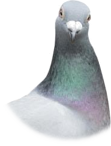

Questo capoverso è posto in epigrafe all'opera Voci Notturne di Pupi Avati.

Dove finisce la ragione comincia un territorio che non ci appartiene, nel quale siamo intrusi: una terra che ha regole che non conosciamo, dove si parla una lingua misteriosa e dove le nostre logiche non sono utilizzabili in alcun modo. Noi in questo territorio possiamo solo subire un mistero, che, anziché disvelarsi, si fa sempre più impenetrabile. Io non so dire se questa è una pena o un premio. Io non so dire nulla, ma so che questo luogo dove sono non deve essere in alcun modo cercato né in alcun modo trovato.

Definisce, secondo la mia opinione, con geometrica esattezza il mondo in cui ci è stato dato di vivere in questo tempo.